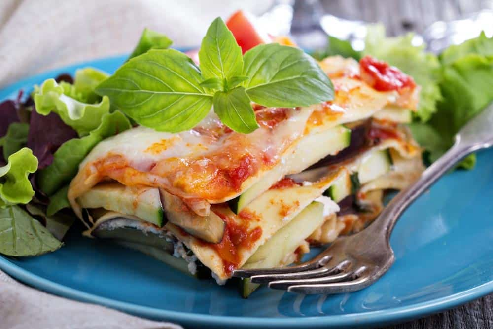

Lasagna

Ingredientes
- 600 g carne de ternera para guisar
- 300 g panceta de cerdo
- 1 cebolla
- 2 zanahoria
- 1 rama apio
- 200 ml vino tinto
- 800 g tomates pelados o salsa de tomate
- 50 ml leche
- 3 cda aceite de oliva
- sal al gusto
- pimienta negra molida al gusto
Steps
- Cortamos la panceta en cuadraditos pequeños. Pero primero quitamos la piel porque es muy dura.
- Ponemos la panceta a fuego medio para que se vaya haciendo despacio.
- Mientras tanto cortamos las verduras en cuadrados pequeños.
- ¡No olvidamos de remover la panceta!
- Añadimos a la sartén con la panceta un chorro de aceite. A ser posible el de oliva.
- Y añadimos las verduras.
- Añadimos 1 pizca de sal.
- Y, a fuego medio bajo, cocinamos hasta que la cebolla, la zanahoria y el apio se ablanden.
- Añadimos la carne de ternera.
- Hacemos el fuego medio alto y removemos muy bien.
- Una vez la carne haya cambiado de color añadimos 1 vaso de vino tinto.
- Cocinamos hasta que se evapore el alcohol.
- Añadimos salsa de tomate o tomates troceados. Yo voy a utilizar los tomates que vienen enlatados enteros pero puedes utilizar la salsa de tomate que más te guste.
- Una vez que la salsa haya empezado a hervir hacemos el fuego bajo y ponemos la tapa pero dejando un hueco para que salga el vapor.
- La salsa hay que cocerla de 2 a 4 horas. Con mucha calma. Si ves que se está quedando seca añade un poco más de agua o de caldo
- Salpiméntala a tu gusto.
- Añade la leche para equilibrar la acidez.
- La salsa está lista.